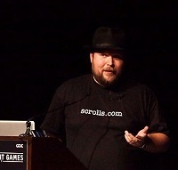

Hall Of Fame
Nolan Bushnell
Nolan Bushnell war einer der ersten Videospielentwickler. 1972 erschien das Spiel
Pong.
Damit legte er
den Grundstein für die Welt der Videospiele.
Er wurde 2005 in die Walk of Game aufgenommen.
Er lebt mit seiner Frau Nancy Bushnell im Alter von 73 Jahren in Los Angeles.
John Carmack
John Carmack ist auch einer der Urväter der Videospielindustrie. Mit seinem
Shooter Doom legte er den Grundstein für sehr viele moderne
Shooter, wie
z.B. Battlefield, Counter Strike, Call of Duty uvm. 2013 wurde er Chief
Tchnology Officer bei Oculus VR, um die Entwicklung von VR Headsets
voranzutreiben.
Er lebt mit seinen zwei Kindern und seiner Ehefrau in Texas.

Shigeru Miyamoto
ShigeruMiyamoto ist ein leitender Entwickler bei Nintendo. Er schuf viele bekannte Reihen wie unter
anderem Super Mario, The Legend Of Zelda und Donkey Kong.
Er ist einer der Hauptmanager und
General Manager der Entwicklungsabteilung. 2015 übernahm er übergangsweiße nach dem Tode
Satoru Iwatas für 3 Monate gmeinsam
mit Genyo Takeda die Geschäftsführung. Seit dem 16.9.2015 ist
er der Creative Fellows von Nintendo. Er wurde 2005 ebenfalls wie Nolan Bushnell in die
Walk Of Game
aufgenommen
Seine Ideen sind groß;teil aus seinen erinnerungen Inspiriert. Aber auch aus Deutschland stammen
einige Inspirationen: Zum Beispiel sind die Schlösser einigen
deutschen nachempfunden.
Heute Lebt er mit seiner Ehefrau und dem gemeinsamen Sohn in seiner Heimatstadt Nantan.
Satoshi Tajiri
Satoshi Tajiri ist der Schöpfer von Pokemon. 1982 gründete er das Game Freak Magazin woraus sich später die
Entwicklerfirma
zu Pokemon entwickelte. Einer der Mitgründer dieses Magazins war Ken Sugimori welcher alle Bilder für
Pokemon zeichnete.
Die Idee zu Pokemon kam ihm da er kommenenden Generationen von Kindern die möglichkeit geben
wollte Kreaturen (Pokemon)
zu jagen wie er es mit Insekten tat, nur das er diese nicht in Bälle einsperrte. Während seiner Arbeit
bei Nintendo freundete
er sich mit Shigeru Miyamoto an welcher namentlich auch seinen Platz im Japanischen Anime
"Pokemon" fand. In der
deutschen übersetzung ist Shigeru Garry Eich.
Sid Meier
Sid Meier ist gebürtiger Kanadier, er wuchs in Detroit auf und Studierte in Michigan Informatik und
Geschichte. Mit Bill Stealey
gründete er 1982 Micro Prose. Jedoch stand die Firma finanziell nie
besonders gut da und wurde breits 1994 wieder verkauft was zum
austritt Bill Stealeys führte. 1996
verließ; auch Sid Meier die Firma und gründete Firaxis Games.
Dort erschienen die Civilization Teile III und aufwärts, 2004 ebenfalls "Pirates!" durch welcher er
mit seiner Firma
groß; wurde. Die Veröffentlichten Spiele sind fast ausschließlich im
Strategie Genre
2006 wurde er hauptsächlich wegen "Pirates!" und "Civilization" in die Walk of Game aufgenommen.
Gabe Newell
Gabe Newell, bei Computerspielern auch unter dem Namen "Lord Gaben" bekannt für die häufigen
Rabatt Aktionen auf Steam
ist ein ehemaliger Microsoft Mitarbeiter der zum Mitgründer und
Geschäftsführer von Valve wurde. 2003 wurde Steam entwickelt, eine Vertriebsplattform
für
Computerspiele. Erst konnte man auf Steam nur Spiele von Valve wie Half-Live oder Counterstrike
erwerben, seit Oktober 2005 jedoch auch von anderen Anbietern.
Auf Steam gibt es über
125.000.000 aktive Benutzerkonten.
Er war 2016 auf Platz 810 der reichsten Menschen mit einem Vermögen von 4,1 Milliarden Dollar.
Auß;erdem war er 2010 im Forbes Magazine auch einer der "Names You Need To Know"

Markus Presson
Markus Presson ist ein Schewedischer Spieleentwickler der für das Spiel Minecraft bekannt ist.
Von
Spielern wird er oft Notch genannt, was englisch für "Kerbe" ist. Zu beginn Programierte er alleine,
jedoch gründete er 2010 "Mojang" was er 2014 für ca 2.500.000.000€
an Microsoft verkaufte. Er lebt
derzeit unverheiratet in Stockholm und ist seit 2015 auf der Milliadärs liste von Forbes. Außerdem
ist er Mitglied der Hochbegabtenvereinigung Mensa International
und der Schwedischen Piratenpartei.